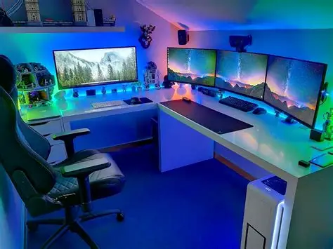

Bem-vindo ao Checkpoint Gamer!
O Checkpoint Gamer é o lugar perfeito para quem ama videogames. Aqui você encontra conteúdos atualizados sobre os principais lançamentos, análises detalhadas e dicas para melhorar sua gameplay.
Seja você um jogador casual ou competitivo, nosso objetivo é te manter informado e entretido com tudo que acontece no universo dos games.
Jogos em Destaque
Confira alguns dos jogos que estão bombando no momento:
- Cyberpunk 2077: Phantom Liberty
- Elden Ring
- Fortnite
- The Last of Us Part II
- Valorant
Esses jogos oferecem experiências únicas, desde mundos abertos imersivos até competições online intensas.
Últimas Notícias
O mundo dos games está sempre em movimento. Novos lançamentos, atualizações e eventos acontecem o tempo todo, trazendo novidades para os jogadores.
Fique ligado no Checkpoint Gamer para não perder nenhuma informação importante sobre seus jogos favoritos.
Análises e Reviews
O que achamos dos jogos
Nossa equipe testa e avalia diversos jogos para trazer análises sinceras e completas. Aqui você descobre se aquele jogo vale a pena antes de comprar.
Galeria
